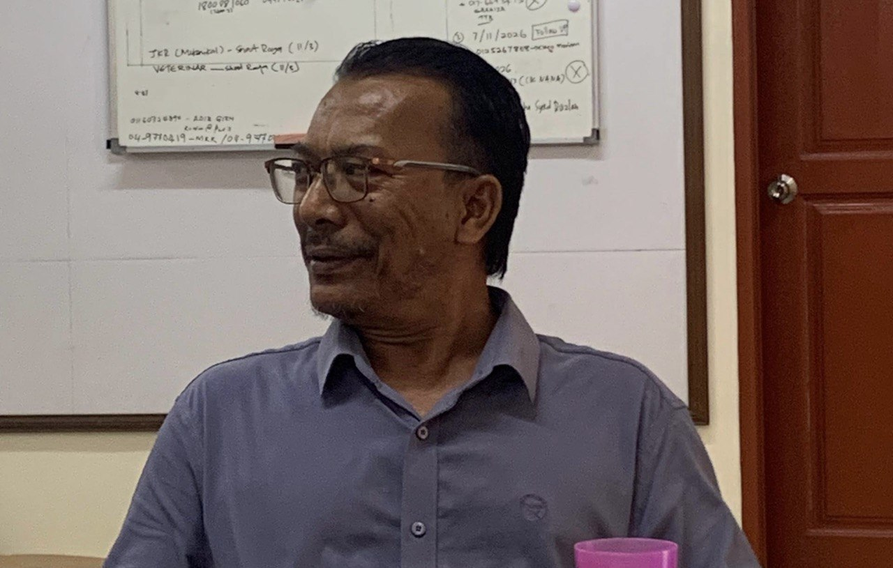

Pembantu Muzium Kota Kayang

Nama: Encik Yusuf Bin Abdullah
Jawatan: Pembantu Muzium
Tempoh Berkhidmat: 25 Tahun
Encik Yusuf mula berkhidmat di Muzium Kota Kayang sejak tahun 2001 dan merupakan antara staf awal muzium tersebut.
Antara tugas utama Encik Yusuf ialah membantu pengurusan pameran, lawatan pelawat dan aktiviti berkaitan sejarah di Muzium Kota Kayang.
Beliau juga sering berkongsi cerita sejarah dan pengalaman kepada pengunjung muzium.
Muzium Kota Kayang siap dibina pada tahun 2000 dan mula dibuka untuk lawatan pada tahun 2001.
Kawasan ini pernah menjadi pusat pemerintahan lama dan mempunyai hubungan dengan pelabuhan lama Tebing Tinggi.
Kawasan sekitar muzium juga kaya dengan sejarah, makam lama dan artifak bersejarah.